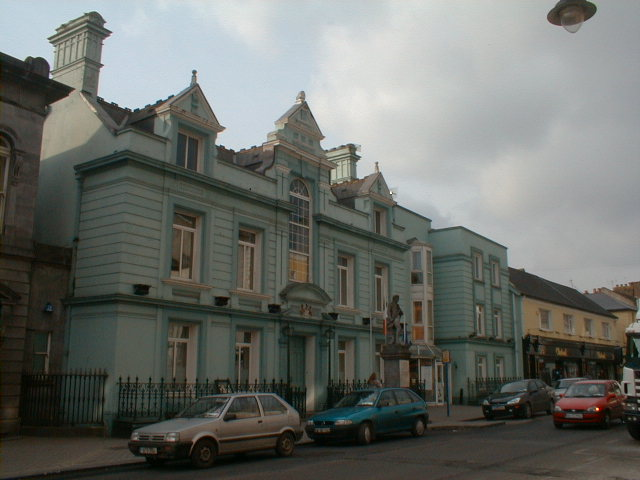
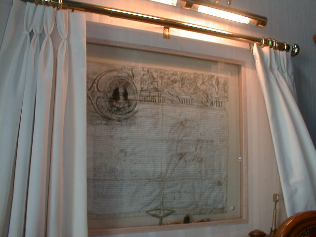
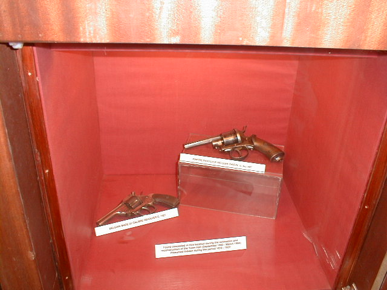
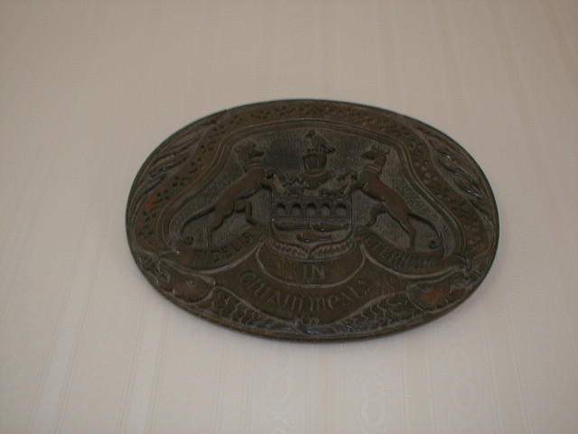

The Town Hall
The Town Hall

The Town Hall was built in the 17th century. It was a private mansion around this time. It belonged to a local timber merchant
by the name of Richard Hamerton. It then became an inn called "The Globe Inn". It was rebuilt in 1881 as the Town Hall under Edward
Cantwell (The Mayor). It now contains multipule offices and council chambers of the Clomel corportration. The council chambers of Clonmel
now holds two important documents on the left hand side of the mayor's chair are documents given by Charles 2nd to the town of Clonmel bestowing
a grant to reconsturt the town hall in 1654 Four years after Oliver Cormwell seige.
To the right of the Mayor's Chair are documents incorporating the powers of the corparation these were recived by King William the 2nd in the 1697.
The original documents were given to the town in the 16th century and were lost.

In 1992 when the town hall was being renovated a gun was found. It is not know where the gun came from but is belived that the gun was hidden here in the 1916 rising.
The gun is mow displayed in a glass case in the panels of the wall as showen in the picture below.

The coat of arms is placed in side of the mayor's office and printed on the doors of the town hall and there is a plaque over the main town hall door. The picture below is
the coat of arms in side the mayor's office.

© 2004 history Of Clonmel